Introduction - ELECTRICAL CIRCUIT FOR INSTRUMENTS/INDICATORS
- Path
- Descriptions > 55 ELECTRICAL EQUIPMENT > 5505 ELECTRICAL CIRCUIT FOR INSTRUMENTS/INDICATORS > Introduction - ELECTRICAL CIRCUIT FOR INSTRUMENTS/INDICATORS
- Kind
- system description
- Applies to
- all engines; all production periods
- Interactive page
- https://sloeber94.github.io/elrnDB-lYpsln/en/#/2429856
Applies to: all engines; all production periods
GENERAL CHARACTERISTICS
In conventional electrical systems, functions are activated with the aid of dedicated point-to-point connections.
As the number of eletrical/electronic devices on board new vehicles has increased, the connection are becoming more complex and heavy. One reason for this is the complexity of functions implemented in the many electronic units, which require a continual interchange of data. All this makes it more difficult to install new electrical systems and increases the complexity of fault diagnosis.
Many problems have been resolved and new electrical systems have been optimised compared to conventional systems by means of networking. This provides a more effective means of managing communication on board the car and for the transfer of information between subsystems via the serial buses present: single wires, pairs of twisted wires or even optical fibres. We shall now see how the move from conventional systems to those known as multiplexing has taken place.
Applies to: all engines; all production periods
CLASSIC SOLUTION
The four control units in the diagram below require a number (N) of wires for each input/output in order to perform their function. This has created so much wiring that the system is more complex (design and manufacture), more bulky (weight, bulk and cost) and requires some 40 kg of wiring harnesses amounting to a length of more than 2 km. This requirement is likely to double every 10 years because even now one such vehicle may be equipped with 20 to 40 control units (ECUs).
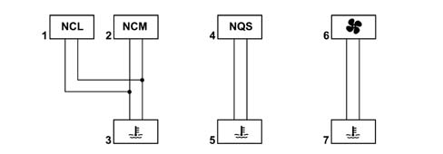
1 - Climate control node 2 - Engine management node 3 - Engine temperature sensor (for engine management node) 4 - Instrument panel node 5 - Engine temperature sensor (for instrument panel warning light) 6 - Engine cooling fan 7 - Engine temperature bulb
Applies to: all engines; all production periods
CLASSIC SOLUTION
The first step that allowed us to reduce the volume and the complexity of the wiring harnesses was to group several electronic functions in a single unit: FEWER COMPONENTS = FEWER WIRES.
Applies to: all engines; all production periods
EXAMPLES OF INTEGRATION
The multi-function control unit manages: central locking, electric windows, courtesy light timer, heated rear windscreen timer and heated, exterior rear view mirrors.
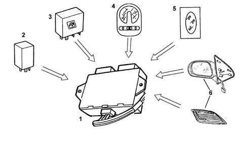
1 - Multifunction control unit 2 - Central locking 3 - Electric window control unit 4 - Centre courtesy light 5 - Rear courtesy light 6 - Heated rear windscreen / heated door mirrors
Applies to: all engines; all production periods
EXAMPLES OF INTEGRATION
The integration of electrical/electronic functions in a single unit has allowed us to improve:
- the management of current consumption
- the functionality of appliances because they are managed by a single control unit;
- the fault diagnosis using control unit self-diagnosis
This first stage has allowed us to reduce the number of electronic units but not to reduce the volume of wiring harnesses sufficiently.
Applies to: all engines; all production periods
MULTIPLEXING SOLUTION
This solution has made it possible to reduce the volume of cable looms and to considerably improve the transmission of information between the various electronic units.
These transmissions take place through a BUS channel consisting of 2 cables (the main one already used for the telephone, radio, television network etc.)
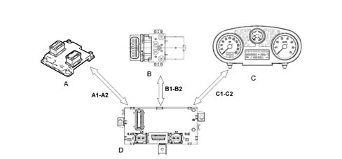
A - B - C: NODES (CONTROL UNITS) D: MASTER CONTROL UNIT OR BODY COMPUTER A1 - A2, B1 - B2, C1 - C2: COMMUNICATION BUS
Applies to: all engines; all production periods
MULTIPLEXING SOLUTION
In addition to simplifying the wiring and improving communication between the electronic units, the multiplexing solution also makes it possible to reduce the number of sensors (INFORMATION SHARING)
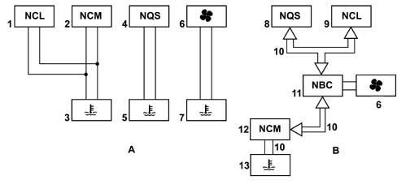
A - Classic solution B - Multiplexing solution 1 - Climate control node 2 - Engine management node 3 - Engine temperature sensor (for engine management node) 4 - Instrument panel node 5 - Engine temperature sensor (for instrument panel warning light) 6 - Engine cooling fan 7 - Engine temperature bulb 8 - Instrument panel node 9 - Climate control node 10 - Engine temperature information 11 - Body Computer node 12 - Engine management node 13 - Engine temperature sensor (for engine management node)
Applies to: all engines; all production periods
MULTIPLEXING SOLUTION
In general, in order to send data via multiplexing, we need to define the following:
- (A) THE TRANSMISSION CHANNEL (electric cables, optical fibres, radio waves, etc.)
- (B) THE TYPE OF SIGNAL (voltage, current, light, etc.)
- (B) THE COMMUNICATION PROTOCOL (all the rules that allow management of analogue or digital transmission management, code type, address, transmission order, error recording etc.).
On this model, the transmission channel (A) is a pair of electrical wires known as a BUS.
The type of signal (B) is VOLTAGE and the communication protocol (C) is the CAN (Controller Area Network) developed by BOSCH.
Applies to: all engines; all production periods
F.L.ORE.N.C.E STRUCTURE
The MINI F.L.ORE.N.C.E systemhas been designed for the optimum management of the vehicle's electrical and electronic functions.
The system interacts with all the electrical system functions, directly cotnrolling the so-called bodywork functions (visibility, access, on board information, comfort, telematics, etc.) and supporting the exchange of data between the traction control systems (engine, braking, gearbox, etc.).
For excellent performance each control unit (electronic or electro-mechanical) is located in a central position in relation to the functions which it manages. This allows minimisation of the power and signal distribution system through the extensive use of serial communication networks, with advantages when solving the problems of size, reliability, weight and cost.
The distribution of power takes place via the junction units and/or fuse boxes, connected to the control elements (relays and static actuators) in order to ensure the maximum level of electrical protection and the minimum degree of wiring complexity .
The MINI FLORENCE system offers countless advantages such as, for example:
- the sensors in the various subsystems are made available to the network in order to be shared eliminating the presence of similar sensors
- new functions can only be added by modifying the software (developed during the vehicle life),
- wiring design is simplified and the number of connectors is reduced,
- electronic device operating safety is increased to improve the reliability of information transmited,
- an integrated diagnostic function simplifies service operations on electric/electronic components.
The system structure on this vehicle comprises:
- 2 CAN communication NETWORKS which connect NODES belonging to two different areas: one for the dynamic control of the vehicle and one for the so-called 'bodywork' functions.
- a serial line for immobiliser recovery
- Different K SERIAL LINES for the fault diagnosis of several NODES / CONTROL UNITS
- an A-BUS serial line
Below is a table containing all the elements (nodes/control units/devices) which make up the mini FLORENCE structure for the most comprehensive configuration.
Mini FLORENCE system components
CAB | Air bag control unit |
|---|---|
CDC | CD-Changer |
CPL | Dashboard Control Unit |
CSP | Rain/Dusk Sensor Control Unit |
CVM | Engine Compartment Control Unit |
CVS | Clock Spring Cable |
DSP | Audio Hi-Fi Amplifier |
NBC | Body Computer node |
NCR | Robotized Gearbox Node |
NCL | Climate Control Node |
NCM | Engine Control Node |
NFR | Braking System Node |
NGE | Electrical steering node |
NIT | Telematic Info Connector |
NPG | Driver's Door Node |
NPP | Passenger Door Node |
NQS | Instrument panel node |
NRR | Radio Receiver Node |
CPA | Parking Sensor Node |
NYL | Lateral Yaw Node (yaw sensor) |
DEV | Steering column switch unit |
The two C-CAN and B-CAN networks are physically separate from one another, but both meet at the BODY COMPUTER NODE; the latter, which is considered the MASTER node for the two networks, contains a GATEWAY function which allows the transfer of information/dat from one network to the other, even if the two networks are operating at different speeds:
- B-CAN NETWORK transmission speed = 50 Kbit/sec.
- C-CAN NETWORK transmission speed = 500 Kbit/sec.
Below is a diagram summarizing the structure of the mini F.L.Ore.N.C.E. system.'.
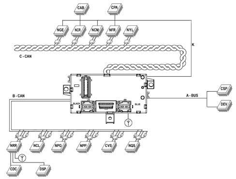
Applies to: all engines; all production periods
F.L.ORE.N.C.E STRUCTURE
Refer to the previous table for a description of the nodes.
Applies to: all engines; all production periods
B - CAN NETWORK CONNECTION
The B - CAN network (low speed) consists of 2 electrical cables, one White/Pink shown in the wiring diagram as a CAN - A cable and one Black/Pink one shown in the wiring diagram as a CAN - B cable.
The transmission of information through this pair of cables takes place through the transmission of 2 voltage levels (V), one High and one Low associated with the CAN - A cable and the CAN - B cables, respectively. the mathematical difference between these two levels produces two voltage values associated with two logic levels, 0 or 1.
The latter constitute the basic information unit known as BIT (binary digit) and, suitably combined, they make up the information to be transmitted.
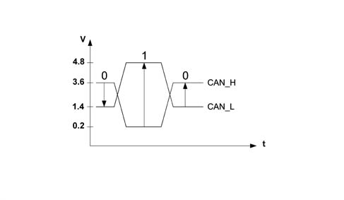
Applies to: all engines; all production periods
B - CAN NETWORK CONNECTION
V Can A - V Can B = 3.6 - 1.4 = + 2.2 V (bit 0)
V Can A - V Can B = 0.2 - 4.8 = - 4.6 V (bit 1)
Applies to: all engines; all production periods
C - CAN NETWORK CONNECTION
The C - CAN network (high speed) on the LANCIA Y consists of two twisted electrical cables, one Green, shown in the wiring diagram as the CAN - H cable and one Brown, shown in the wiring diagram as the CAN - L cable.
The transmission of information is the same as that for the B - CAN network. in this case the High voltage level is associated with the CAN - H cable and the Low voltage level with the CAN - L cable.
The mathematical difference for these two voltage levels for the C - CAN network also gives rise to two logic levels, 0 and 1, but with one difference illustrated in the diagram:
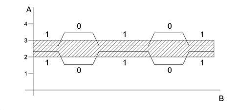
Applies to: all engines; all production periods
C - CAN NETWORK CONNECTION
The network interface cannot communicate at all if one of the following situations arises in the C-CAN network:
- Break in one of the two CAN cables (H and L)
- Short circuit between the two CAN cables (H and L)
- Short circuit of the CAN - H cable or the CAN - L cable to +Vbatt.
- Short circuit of the CAN - H cable of the CAN - L cable to earth.
Applies to: all engines; all production periods
PRIORITIES IN THE CASE OF A TRANSMISSION CONFLICT FOR SEVERAL NODES
The protocol for the mini Florence system can deal with problems of superimposition when several nodes wish to issue a frame simultaneously. A node sending a lower priority message interrupts its transmission immediately to make way for the node transmitting a higher priority signal. In practice, the higher priority message is sent via the network without any interruption or delay. - The frame with the highest priority gains the possibility of being transmitted through the BUS; a dominant level (0) always overcomes a recessive level (1).
Simultaneous access of several control units to the network may give rise to conflict on the C-CAN line (BUS) the diagram shows that the engine control unit node (NCM) and the brake system control unit (NFR) send identical frames (data packages) up to point (D); from point (E) the two frames have a discordant bit.
Because the NFR node is simultaneously checking (reading) the frame as well as transmitting it, from this moment on as soon as the NFR node realises that the bit it wishes tot transmit (1) of recessive value will come up against a bit (0) of dominant value in the network, it immediately interrupts transmission of its frame (loss of arbitrage) to give way to the NCM node, which is transmitting a higher priority frame. It stands by until the NCM node has finished transmitting and the line becomes free. The frame transmitted along the network is from the NCM node. The NFR may now re-attempt to gain access to the line to send the frame it tried to send previously. Provided another collision does not occur.
Applies to: all engines; all production periods
A - BUS LINE CONNECTION
The A - BUS serial line is designed to guarantee the exchange of information / commands between the various electronic control units.
On this vehicle, these control units are:
- Steering column switch unit electronic module
- Rain/dusk sensor
- Body computer node
The transmission speed for the A - BUS is 4.8 kbit/sec.
Communication at the A - BUS takes place through the exchange of data packages between the different control units.
Each control unit connected to the A - BUS has its own electronic address; when one control unit has to send a command / information to another control unit, it must always enter the address of the destination control unit in the data package.
Transmission always takes place from a transmitting control unit to a receiving control unit (one-way).
When the data reception is complete, the receiving control unit should send the outcome to the transmitting control unit, thereby ending the data package exchange.
Unlike the CAN NETWORKS, the transmission priorities at the A - BUS are assigned to each control unit and not to the information to be transmitted, therefore the control unit access sequence in the case of a transmission conflict is decided at the design stage.
Applies to: all engines; all production periods
LINE K CONNECTION
In the mini F.L.Ore.N.C.E. system the K lines make it possible to carry out fault diagnosis using the diagnostic equipment for the following Nodes / Control Units:
- Electric steering node (NGE)
- Gearbox/Robotised Gearbox (NCR)
- Engine Management Node (NCM)
- Brake Node (NFR)
- Air Bag Control Unit (CAB)
- Parking Sensor Control Unit (CPA)
Applies to: all engines; all production periods
SPECIFICATIONS
The BODY COMPUTER NODE manages some of the vehicle's electrical system functions.
The NBC is housed under the dashboard near the steering column, in a central position in relation to the functions that it manages.
The Body Computer Node (NBC) together with the Dashboard Control Unit (CPL) form the DASHBOARD NODE (NPL) where the former (NBC) constitutes the electronic section and the latter (CPL) the electro-mechanical section.
The fuses and relays are fitted on the CPL, whilst the NBC houses the EOBD fixed connector used for the fault diagnosis via the K lines of the NCM, NFR, NCR and CAB.
This is connector is also prepared for the dialogue with the B - CAN and C - CAN networks which can be used for both fault diagnosis and for possible on line programming.
Applies to: all engines; all production periods
BODY COMPUTER NODE GENERAL FUNCTIONS
The NBC peforms the following functions:
- It receives and sends information on the B - CAN network (e.g.: fault diagnosis, warning lights, commands, data)
- It receives and sends information on the C - CAN network
- It interconnects with the dashboard, front and rear wiring
- It allows an interface for the fault diagnosis (EOBD)
- It connects to the CPL to take power supplies / signals and operate relays.
We find the following functions:
- management of the courtesy lights with timed switching off and dimming
- management of on/off exits at relay: headlamp washer pump, main beam headlamps, fog lights, dipped headlamps, services, heated rear windscreen
- on/off management of relay during right/left direction indicators or hazard warning lights for acoustic feedback
- on/off output management directly at the loads and lights check function: front side lights (left and right) and rear side lights (left and right), front direction indicators (left and right), rear direction indicators (left and right), and side repeaters (left and right), number plate lights (left and right), brake lights (left and right), rear fog lamps (left and right);
- management of on/off exits directly at loads: heated rear windscreen LED, hazard warning lights LED;
- repetition of the vehicle speed signal
- management of the ideogram light driver
- management of the SBMT driver (load disactivation at key-off)
- management of the recovery serial line to the engine management control unit (immobilizer)
- management of the serial line for the tilt sensor, rain sensor, steering column switch unit.
- master for the entire system: management of the IFRs at the slave nodes under direct jurisdiction and monitoring of the IFRs by the other master nodes, monitoring and management of protocol errors, timer control;
- fault diagnosis of the entire system: collection of diagnostic information, management of the fault diagnosis using the EXAMINER.
- immobilizer: management of the key code with possible engine immobilizing
- acquisition of on/off signals: dipped headlamp operation, main beam headlamp operation, boot lock opening control, boot locking function, handbrake control, hazard warning lights control, left and right rear fog lamps control, fog lights relay feed, left direction indicators control, right direction indicators control, parking lights control, side lights control, city control, steering column switch unit auto control, headlamp washer control, FIS control, boot button, bonnet button, front brake pad wear (left and right), brake fluid level, reverse gear engaged;
- acquisition of analogue signals: fuel level, alternator voltage (D+), battery voltage, brake lights fuse status recognition, centre courtesy light control, left and right spot lights control, brake lights control
- acquisition of vehicle speed signal
- acquisition of lock sensors from door.
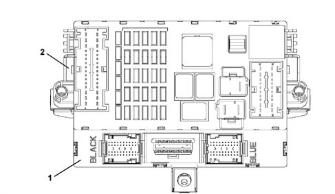
1 - Body Computer Node (NBC) 2 - Dashboard Control Unit (CPL) NBC+CPL = NPL
Applies to: all engines; all production periods
BODY COMPUTER NODE GENERAL FUNCTIONS
.
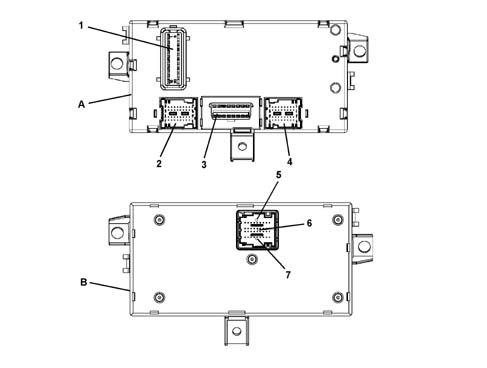
A - Body Computer Node (NBC) front view B - Body Computer Node (NBC) rear view 1 - Connector F 2 - Connector D/E 3 - Connector C (EOBD tester output) 4 - Connector A/B 5 - Connector G 6 - Connector H 7 - Connector I
Applies to: all engines; all production periods
BODY COMPUTER NODE NBC PIN OUT
Connector F (20-way)
Pin | Operation |
|---|---|
relay | Supply for boot release gear motor |
relay | Button on brake pedal status input |
3 | Button for switching on reversing lights status input |
4 | Not available |
5 | Low speed CAN line |
6 | Heated rear windscreen relay control output |
7 | Low speed CAN line |
8 | Dipped headlamp relay control output |
9 | INT from ignition switch |
10 | Preparation for boot lock |
11. | Boot release geared motor control |
12. | Parking light input |
13 | INT for instrument panel |
14 | Service relay control output |
15 | INT from ignition switch |
16 | Not available |
17 | Supply for front rear courtesy light, climate control, tester output |
18 | Power supply for Body Computer |
19 | Dedicated power supply for direction indicators and hazard warning lights |
20 | Dedicated earth for release geared motor |
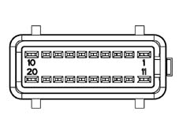
Applies to: all engines; all production periods
BODY COMPUTER NODE NBC PIN OUT
Connector D/E
Pin | Operation |
|---|---|
relay | Driver's door open status input for NCR |
relay | Operation of left side repeater |
3 | Right rear direction indicator control output (21W) |
4 | Fuel level input |
5 | Left rear side light control output (5W) |
6 | Right rear side light control output (5W) |
7 | A-bus serial line for CSP |
8 | Input signal from normally open switch signalling front driver's door open |
9 | Left no. plate light control output |
10 | Sun roof control unit output (NC) |
11. | Negative signal for front passenger door open |
12. | Left rear direction indicator control output (21W) |
13 | Operation of side direction indicators left |
14 | Hanbrake lever button status input |
15 | Fuel level input (negative) |
16 | Left rear door open status input |
17 | Inertia switch signal input |
18 | Serial line for CPA |
19 | Signal from city button |
20 | Right rear fog lamp control output |
21 | Centre courtesy light control output |
22 | Right brake light control output |
23 | Interior light control output (boot compartment) |
24 | Signal from boot lock catch (locking enablement) |
25 | Input signal from normally open switch signalling front passenger side open |
26 | Input signal from normally open switch signalling right rear door open |
27 | Supply for front/rear courtesy light |
28 | Analogue input for switching on left/right spot light and excluding front/rear courtesy light in centre courtesy light |
29 | Positive from antitheft device (provision) |
30 | Left spot light control in centre front courtesy light |
31 | Left rear fog lamp control output |
32 | Left brake light control output |
33 | Passenger compartment interior ilght control output (NC) |
34 | Negative signal from switch (preparation) |
35 | Signal from opening switch on boot handle |
36 | Signal from normally open switch signalling boot open |
37 | Right spot light in centre front courtesy light control output |
38 | Right no. plate light control output |
39 | Aerial power supply |
40 | Internal serigraphy lighting control output |
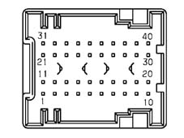
Applies to: all engines; all production periods
BODY COMPUTER NODE NBC PIN OUT
Connector C (EOBD tester output)
Pin | Operation |
|---|---|
relay | Serial line K for NFR |
relay | Not available |
3 | Serial line for Air Bag CAB |
4 | Power earth |
5 | Signal earth |
6 | Low speed CAN line |
7 | Serial line for NCM/NCR diagnosis |
8 | K line for immobiliser |
9 | Serial line for NGE |
10 | Not available |
11. | Not available |
12. | Serial line (NC) |
13 | Passing signal line for rear (PARK) |
14 | Low speed CAN line |
15 | Line L (NC) |
16 | Supply tester output |
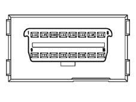
Applies to: all engines; all production periods
BODY COMPUTER NODE NBC PIN OUT
Connector A/B
Pin | Operation |
|---|---|
relay | Button input for reversing light activation |
relay | Left side direction indicator control output (5W) (NC) |
3 | Screen fitting for Immobilizer |
4 | Immobilizer aerial |
5 | Immobilizer aerial |
6 | Serial interface (provision) |
7 | Speedometer input from NFR |
8 | Output for fog lights relay control |
9 | Output for main beam headlamps control |
10 | Provision |
11. | Provision |
12. | Provision |
13 | Headlamp washer request wish-wash signal input |
14 | Headlamp washer relay control output |
15 | Speedometer input signal earth for gearbox |
16 | Braking node line K |
17 | Speedometer signal input coming from robotized gearbox |
18 | Brake system fluid level input |
19 | Battery recharging warning from alternator D+ input |
20 | K line for testing NCM, NCR |
21 | RF receiver aerial earth |
22 | Left side direction indicator control output (5W) (NC) |
23 | Brake pad wear state input |
24 | Bonnet button status input (NC) |
25 | A-bus serial line for DEV |
26 | Low speed CAN line for NCL |
27 | Low speed CAN line for NCL |
28 | Speedometer repeater output for NCRF |
29 | IN/OUT recovery serial for NCM in case of break in C-CAN line |
30 | Right front side light control output (5W) |
31 | RF receiver aerial |
32 | High speed CAN line |
33 | High speed CAN line |
34 | Antitheft siren power supply (NC) |
35 | Serial line K for CPS |
36 | High speed CAN line to NCM |
37 | High speed CAN line to NCM |
38 | Left front direction indicator control output (21W) |
39 | Right front direction indicator control output (21W) |
40 | Left front side light control output (5W) |
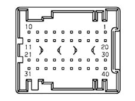
Applies to: all engines; all production periods
BODY COMPUTER NODE NBC PIN OUT
Connector G/H/I (9+18+9 way)
Pin | Operation |
|---|---|
relay | Foglamp activation request input |
relay | Steering column switch unit exterior lights auto mode activation signal |
3 | Dedicated power supply for direction indicators driver and NQS serigraphy |
4 | Dipped headlamps switch status input |
5 | Low speed CAN line from NQS |
6 | Low speed CAN line from NQS |
7 | Right parking light/direction indicators control input |
8 | Signal earth |
9 | Power earth |
10 | Power earth |
11. | Serial line K for NGE |
12. | Serial K line for CAB |
13 | Negative control for LED (provision) |
14 | Positive control for LED signalling anti-theft device on (preparation) |
15 | +30 SBMT (passenger compartment lights) |
16 | Passenger compartment interior lights control output |
17 | Parking light signal (NC) |
18 | Screen print lighting control output |
19 | Signal earth |
20 | Fog lamp control negative signal |
21 | Heated rear windscreen LED control output |
22 | Fog lights on LED negative control |
23 | Speedometer repeater output for CTA |
24 | Low speed CAN line for NVO, NBS (NC) |
25 | Low speed CAN line for NVO, NBS (NC) |
26 | Supply NCC climate control unit |
27 | INT. for CPL |
28 | Side lights switch status input |
29 | Hazard warning lights LED control output |
30 | Left direction indicators/parking light control input |
31 | INT for NQS |
32 | Heated rear windscreen button status input |
33 | Main beam headlamps switch status signal |
34 | Hazard warning lights switch status input |
35 | Rear fog lamp button status input |
36 | NQS signal earth |
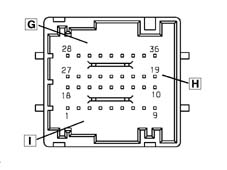
Applies to: all engines; all production periods
Some CAN nodes are programmed with default settings that the customer will find upon purchasing the vehicle.
The following nodes store such information:
- Body Computer
- Instrument panel
- Climate control unit
Applies to: all engines; all production periods
battery disconnection
If the battery is disconnected:
- Body Computer,
- Instrument panel
- Climate Control Unit
store all information received and must not be initialised after battery disconnection.